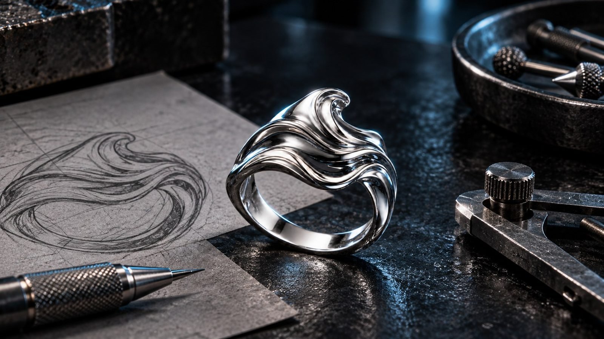
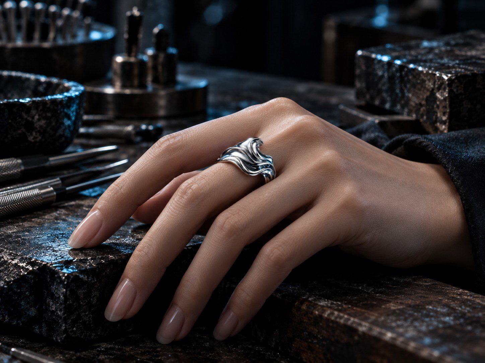

NHẪN · ORBIT 01
Nhật Quang
Một dải bạc uốn liên tục quanh ngón tay, mở ra khoảng âm ở trung tâm để ánh sáng thay đổi theo từng góc nhìn. Bề mặt satin được hoàn thiện thủ công giúp hình khối giữ vẻ trầm tĩnh nhưng vẫn bắt sáng ở các cạnh.
GALLERY
Chi tiết tác phẩm điêu khắc
Quan sát Nhật Quang từ nhiều góc để thấy rõ chuyển động của đường cong, khoảng âm và sự thay đổi của bề mặt bạc dưới ánh sáng.
THÔNG SỐ
Kích thước và chất liệu
Nhật Quang được chế tác theo các kích thước phổ biến và có thể được tư vấn lại trực tiếp tại atelier để chọn độ ôm phù hợp.
Tôi cần tư vấn kích thướcBảng kích thước tham khảo
| Size 08 | Đường kính trong 15,3 mm · Chu vi khoảng 48 mm |
|---|---|
| Size 10 | Đường kính trong 15,9 mm · Chu vi khoảng 50 mm |
| Size 12 | Đường kính trong 16,5 mm · Chu vi khoảng 52 mm |
| Size 14 | Đường kính trong 17,2 mm · Chu vi khoảng 54 mm |
| Size 16 | Đường kính trong 17,8 mm · Chu vi khoảng 56 mm |
Chất liệu và bảo quản
92,5% bạc nguyên chất kết hợp kim loại khác nhằm tăng độ bền, phù hợp cho trang sức sử dụng thường xuyên.
Lau bằng khăn mềm sau khi sử dụng, tránh hóa chất mạnh và cất riêng khi không đeo.

CÂU CHUYỆN THIẾT KẾ
Một vòng chuyển động không khép kín hoàn toàn
Nhật Quang bắt đầu từ ý niệm về ánh sáng đi qua một khe hẹp. Thay vì tạo thành một vòng tròn hoàn chỉnh, thân nhẫn được kéo lệch và uốn thành hai mặt phẳng gặp nhau, tạo nên một khoảng trống có chủ ý ở trung tâm.
Xem quá trình chế tácÝ niệm
Ánh sáng đi qua khoảng trống.
Hình học
Đường cong bất đối xứng và hai mặt phẳng chuyển tiếp.
Cảm giác khi đeo
Tạo điểm nhấn rõ nhưng không nặng nề trên bàn tay.
CÙNG NGÔN NGỮ
Tác phẩm liên quan
Những thiết kế cùng khai thác chuyển động, khoảng trống và sự tương phản giữa bề mặt mờ với cạnh phản sáng.
Khám phá thêm

THỬ TRỰC TIẾP
Cảm nhận Nhật Quang trên tay tại atelier
Ánh sáng, tỷ lệ và độ ôm của một tác phẩm điêu khắc nhỏ luôn rõ ràng nhất khi được trải nghiệm trực tiếp. Đặt trước một khung giờ để ORBIT chuẩn bị kích thước phù hợp cho bạn.
Đặt lịch hẹn thử trực tiếp